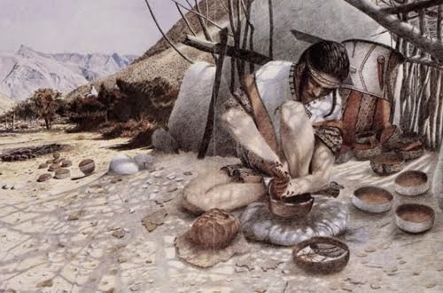
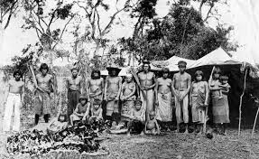
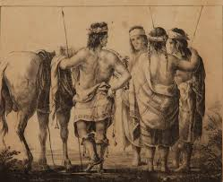
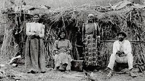
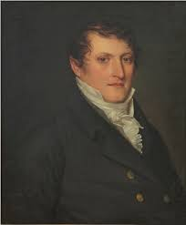
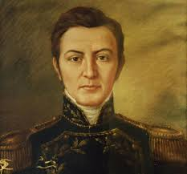
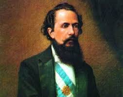
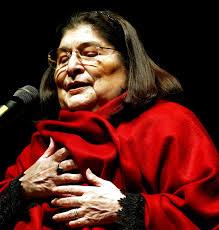
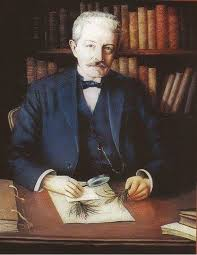
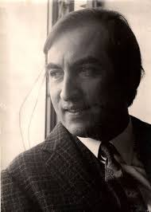

Introducción
Tucumán, conocida como el "Jardín de la República", es una provincia situada en el noroeste de Argentina. A pesar de ser la más pequeña en extensión territorial, posee una rica historia y una gran diversidad cultural. Tucumán ha jugado un papel fundamental en la historia de Argentina, destacándose por su contribución a la independencia y su desarrollo económico y social.
Los Diaguitas
Los Diaguitas fueron uno de los principales pueblos originarios de Tucumán. Vivían en aldeas y se organizaban en comunidades agrícolas. Practicaban la agricultura de terrazas y eran conocidos por su cerámica y textiles. Sus costumbres incluían rituales religiosos y una organización social basada en cacicazgos.
Los Diaguitas ⤵

Los Quilmes
Los Quilmes se asentaron en el Valle Calchaquí y son recordados por su feroz resistencia a la colonización española. Construyeron una ciudad fortificada en el actual Quilmes, donde se refugiaron durante las Guerras Calchaquíes.
Finalmente, fueron derrotados y deportados a Buenos Aires, donde su comunidad casi se extinguió.
Los Quilmes ⤵

Otros grupos indígenas
Otros pueblos, como los Lules y los Vilelas, también habitaron la región de Tucumán.
Aunque menos numerosos, estos grupos contribuyeron a la diversidad cultural de la provincia y dejaron su impronta en la historia local.
Los Lules ⤵

Los Vilelas ⤵

Manuel Belgrano
Manuel Belgrano es uno de los héroes más venerados de Argentina. Lideró las fuerzas patriotas en la Batalla de Tucumán en 1812, una victoria crucial contra las tropas realistas. Su liderazgo y visión fueron esenciales para el avance de la causa independentista.
Manuel Belgrano ⤵

Bernabé Aráoz
Bernabé Aráoz fue el primer gobernador de la provincia de Tucumán. Promovió la autonomía provincial y fundó la efímera República de Tucumán en 1820. Su gobierno se centró en la organización y consolidación de la provincia como una entidad independiente.
Bernabé Aráoz ⤵

Nicolás Avellaneda
Nicolás Avellaneda, nacido en Tucumán, fue presidente de Argentina entre 1874 y 1880. Durante su mandato, promovió políticas de inmigración y desarrollo económico, y es recordado por su frase "Gobernar es poblar". Su legado incluye la expansión del sistema educativo y la modernización del país.
Nicolás Avellaneda ⤵

Mercedes Sosa
Mercedes Sosa, conocida como "La Negra", fue una de las cantantes más importantes de la música folclórica argentina. Su voz poderosa y su compromiso con la justicia social la convirtieron en un ícono cultural. Grabó numerosos álbumes y recibió premios internacionales, dejando un legado imborrable.
Mercedes Sosa ⤵

Miguel Lillo
Miguel Lillo fue un destacado naturalista y botánico tucumano. Sus investigaciones sobre la flora y fauna de la región lo llevaron a ser reconocido como uno de los científicos más importantes de Argentina. La Fundación Miguel Lillo y el Instituto de Ciencias Naturales en la Universidad Nacional de Tucumán llevan su nombre en su honor.
Miguel Lillo ⤵

Tomás Eloy Martínez
Tomás Eloy Martínez fue un periodista y escritor tucumano, conocido por sus obras literarias que combinan ficción y realidad histórica. "Santa Evita" y "La novela de Perón" son algunas de sus obras más destacadas. Su trabajo ha sido traducido a múltiples idiomas y ha recibido numerosos premios literarios.
Tomás Eloy Martínez ⤵

Fundación
San Miguel de Tucumán fue fundada el 31 de mayo de 1565 por Diego de Villarroel. Originalmente situada en Ibatín, la ciudad fue trasladada a su ubicación actual en 1685 debido a problemas con el suministro de agua y ataques indígenas.
Fundación ⤵

Evolución Histórica
Durante el período colonial, San Miguel de Tucumán se convirtió en un importante centro comercial y agrícola. En el siglo XIX, la ciudad fue escenario de eventos clave en la lucha por la independencia y el desarrollo económico de la región.
Evo. Histórica ⤵

La Casa de Tucumán
La Casa Histórica de la Independencia, conocida como "Casa de Tucumán", es un símbolo nacional. El 9 de julio de 1816, en este lugar, se firmó la Declaración de la Independencia de Argentina, marcando el nacimiento de una nación libre e independiente. Este acontecimiento se celebra cada año con gran fervor.
La Casa de Tucumán ⤵

Aspectos Modernos
San Miguel de Tucumán es hoy una ciudad vibrante con una rica vida cultural y académica. Es sede de la Universidad Nacional de Tucumán y alberga numerosos museos, teatros y centros culturales. Lugares de interés como el Parque 9 de Julio y la Catedral de Tucumán atraen a visitantes de todo el país y del extranjero.
Aspectos Modernos ⤵